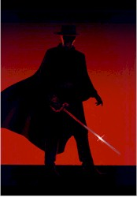
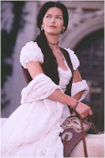

Contents | Features | Reviews | Books | Archives | Store |
 |
|
| Movie Credits | Buy It! |
The Mask of Zorro
Review by Elias Savada
Posted 17 July 1998
|  | Directed by Martin Campbell Starring
Antonio Banderas, Anthony Hopkins, Written by Terry Rossio & Ted Elliott and John Eskow. |
Matthew Letscher is American Captain Harrison Love, a smarmy second foil (two zorros = two villains) that you’d love to smack on his oily head a few times. He’s a blond-haired killer who, no-doubt, will get the point by film’s end. Other smaller but key roles are filled by veteran Mexican actor Pedro Armendariz, Jr. and by the slap happy L. Q. Jones, the latter as Three-Fingered Jack. I’m not sure I’d call this an ensemble piece, but the actors all seem to get behind their roles gallantly and gleefully.
Martin Campbell, last behind the megaphone for 1995’s GoldenEye, does a masterful job handling the period pyrotechnics and blocking his actors before the camera as they trade barbs and barb swords. Kudos to Paul Meheux’s sun-drenched cinematography (lovely locations in Mexico subbing for an American West of bygone days), Cecilia Mantiel’s glorious production design from hacienda to hideout, Graciela Maxon’s stunning costume design showing our young leads in fine form, and James Horner’s stirring soundtrack. The filmmakers playfully send up the E.T. bicycle/moon image early on in Zorro as homage to Steven Spielberg, who adds his illustrious name to the show as one of the film’s executive producers. And it was Spielberg who brought Zeta-Jones to Campbell’s attention. Thanks Steven!
The film screams for a sequel and I, for one, second that with a snappy touch and en garde.
Contents | Features | Reviews | Books | Archives | Store
Copyright © 1999 by Nitrate Productions, Inc. All Rights Reserved.